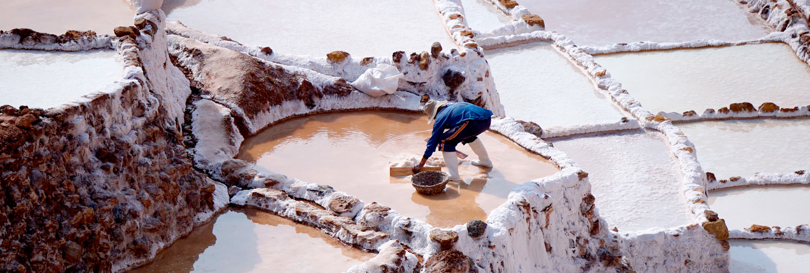

Full Day
Cusco
5 - 10 people
Easy
This half day trip is packed with incredible sights of the Urubamba mountain range or Cordillera Vilcanota, and the beautiful snow-capped peaks of Chicon and Veronica as a backdrop.
The Maras Moray & Salt Mines Tour has become quite popular recently and can be added on to any other treks or tours to have the complete Cusco experience! Besides, this tour is a lovely way to begin acclimatizing to the high altitude of Cusco and get ready for a trek if you have booked one.
Come and be one of the first adventurers to make this wonderful half day tour of Maras, Moray and Salineras in the Sacred Valle, and take incredible pictures of the landscape, and get the country’s best quality while soaking up its colorful atmosphere and enjoy the panoramic views of this fascinating place.
Learn about agriculture, textiles, and the history of the Inca Empire, as well as customs that local people continue to practice today, embarking on this private guided tour to Maras Moray and Salt Mines.
To begin the Moray and Salt Mines of Maras half day tour, your private tour guide and driver will pick you up from your hotel in Cusco at 8:00 am to head to Chinchero town – a small Andean village located at (3,750 meter/ 12,303 feet), dedicated to agriculture, textiles, and home of the famous Peruvian weaving, where you will enjoy the traditional handmade weaving demonstration of textiles, on how to make beautiful natural alpaca wool sweaters, you’ll also have the opportunity to purchase some textiles here if you wish.
After Chinchero, we will drive to the farming laboratory in Moray. This trip takes about 1 hour and is really beautiful. You’ll discover immense snowy mountains, vast fields of corn, meandering through the lush fields of potato, wheat, and beautiful high Andean villages. Finally, you’ll arrive at the fascinating circular terraces of Moray, which is located at (3,450meter /11,318 feet). The size of the terraces is really impressive! Although it seems like an amphitheater, this mysterious circular place is a gigantic Inca agricultural laboratory.
The archeological site of Moray boasts three amphitheater-like terraces – large, medium and small, all made by Incas. These different levels of terraces were carved and built into a huge bowl with their complex system of irrigation. The Moray Inca site is thought they were used to determine the optimal conditions for growing crops.
Once you’ve finished exploring Moray, you’ll head to the village of Maras, a colonial town built, during the Spanish invasion to exploit the Salt mines located near the village. In the Maras’ town you can see the ancient ways, the colonial architecture with beautiful church built-in 1650, where its images of lintels with sculptures in bas-relief are still preserved.
After your Maras visit, you’ll continue driving for 30 more minutes to the Maras salt mines. This place is famous for its salt production dating back to ancient times. There are more than 3,000 wells of salt, carved into the mountain side that is filled daily with groundwater. It was the main provider salt center to Cusco and it’s still even today for many communities around and the Sacred Valley, where locals still farm the salt by hands as the Incas used to do it centuries ago. You’ll also have a surreal landscape at your disposal to take the best photographs.
It’s time to return to Cusco, but don’t worry, the tour is not over yet! On our way back, we’ll stop at the beautiful Huaypo Lagoon. Another great place to take photos located high up on the windswept plains of Anta at 3,657 meters high! In addition, you’ll appreciate the incredible local wildlife and visit some of the communities where many of the Inca Trailporters live. After the tour we drop you off at your hotel or if you want we let you at Main Square of Cusco